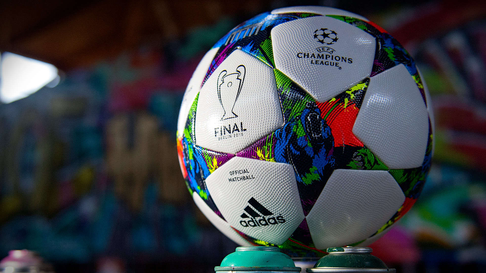

Life is quite interesting but gets boring when you lack activities that cheer you up. From my young age, I have grown to love football.
Football, a game also known as soccer in many parts of the world.This is one of my favorite activities that I take part in.
The game involves two teams with eleven players on each team making a total of twenty two players on the pitch. There are game officials who conduct the game known as the Match Officials or referee
